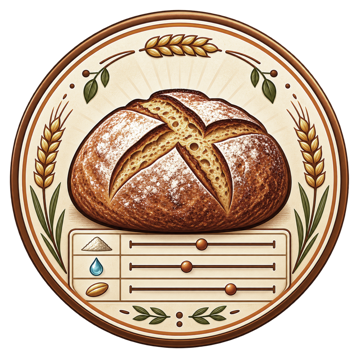

BrotBackstubb
Complete user manual · current user interface
Overview
BrotBackstubb supports you on Mac and iPad in creating, calculating, and scheduling free-form breads. The app calculates ingredient quantities from the desired bread weight, considers the water absorption of the selected flours and the water used in scalds and soakers, and guides you through the recipe step by step on baking day.
All recipes appear on the My Loaves homepage. From there, you can create a recipe, edit an existing recipe, create a PDF or Mela recipe file (.melarecipe), and start the baking day.
Principle
Warnings in the recipe assistant indicate values outside the recommended range. They do not block justified exceptions. Thus, traditional recipes can also be represented.
Appearance and Color Design
On Mac, open BrotBackstubb → Settings. On iPad, choose Color Design from the three-dot menu on My Loaves.
Under Appearance, System automatically follows the current light or dark appearance of macOS or iPadOS. Choose Light or Dark to set the app appearance independently of the system.
BrotBackstubb Default uses the supplied colors. With Custom Color Design, you can adjust the app background, cards and other surfaces, accent color and buttons, and notices and positive status messages using hue, saturation, and brightness. Changes appear in the app immediately.
My Loaves
Recipe Cards
A recipe card displays the name, bread type, flavor-influencing ingredients, procedure characteristics, and target weight. The most important actions are highlighted at the bottom:
- opens the temporal planning immediately and is emphasized as the most important action.
- opens the recipe assistant with the existing values.
- The action menu at the top right offers Add to Shopping List, PDF viewing and saving, export for Mela, editing, and deletion.
Using the search bar at the top right, you filter the saved breads. New Bread Recipe starts the assistant.
My Starter
The My Starter card calculates rye flour, water, and water temperature for the desired starter quantity. It is independent of individual bread recipes and can be opened at any time. You can choose rye flour Type 815, 997, 1150, 1370, or wholemeal; the app default is Rye Flour (Wholemeal).
The target temperature can be set from 26 to 30 °C in 0.5 °C steps; the default is 28 °C. Double-click the slider to return to 28 °C. Together with the entered temperatures of the flour and starter culture or existing starter, the app calculates the required water temperature. Above 42 °C, it advises mixing the water and flour thoroughly before adding the culture.
From the card menu, you can add ingredients for Make Starter and Feed Starter separately to the shopping list. The selected rye flour is added under its exact name so that it combines correctly with the same ingredient from bread recipes. Making starter includes starter cultures as a shopping item; existing active starter is not assumed to be a ready-made product to buy.
Shopping List
Choose Add to Shopping List from one or more recipe cards. BrotBackstubb collects the recipes separately from the baking-day schedule. Open Shopping List at the top of My Loaves to check the ingredients before exporting.
The same ingredient from several recipes or recipe stages appears only once with its combined quantity. BrotBackstubb groups ingredients as Flours, Crushed Grains, Seeds & Nuts, and Other Ingredients. Remove a recipe with the cross next to its name, or use Clear List to reset the collection for a new shopping trip. Clearing it in BrotBackstubb does not remove items from Apple Reminders.
Use each checkbox to choose whether to buy an ingredient. Enter the amount you already have, in grams, under In Pantry; To Buy is the required amount minus the pantry amount, never below zero. Water and active starter are deselected initially but can be included. Starter cultures for making starter are selected initially; for dry cultures, follow the manufacturer's directions rather than the displayed active-culture quantity.
Save to Reminders
Before Save to Reminders, choose a Destination List: “BrotBackstubb Einkauf” (default) or an existing “Einkäufe” list. A later export to the same destination updates BrotBackstubb's open ingredient reminders and removes its no-longer-needed items there. Your personal reminders remain untouched, as do other destination lists. Ingredients are combined in BrotBackstubb first, so multiple recipe stages do not create duplicates in Reminders.
Reminders may display a different order from BrotBackstubb. On supported devices, you can turn on Auto-Categorize once for the “BrotBackstubb Einkauf” list in Reminders. BrotBackstubb cannot enable this setting itself. The special “Einkäufe” grocery list groups items by supermarket category, which can place different flours in different categories.
Create a Recipe
The assistant guides you through the recipe in up to eight steps, depending on the selected ingredients. You can switch between pages using Continue and Previous. When editing, Save Changes saves the existing recipe; you can create a copy using More Options.
- Set the name, number of loaves, and desired finished weight of each loaf.
- Select one to three flour types and distribute their percentages to a total of 100%.
- Check the automatically recommended rye, wheat, or spelt sourdough starter, and adjust it if offered.
- Select grains, seeds, nuts, and spices.
- If there are pre-made starter ingredients, select either the Braising Piece or the Soaking Piece. Without such ingredients, the app skips this step automatically.
- Determine the total salt content.
- Verify the calculated base.
- Write a recipe description or use a suggestion.
Baking Multiple Loaves at Once
In the first assistant step, set the number of loaves and the finished weight per loaf separately. For four 1,000 g loaves, BrotBackstubb therefore calculates all ingredients for a total finished yield of 4,000 g. Sourdough, pre-soak, main-dough water, salt, yeast, and all other ingredients scale together for the complete batch.
During Pre-shape and shape, the app states the number of portions and the approximate dough weight of each portion. For a new recipe that has not yet been adjusted, the planned work time is 10 minutes for setting up the workspace and shaping the first loaf, plus 3 minutes for each additional loaf. The app therefore initially plans, for example, 19 minutes for four loaves and 37 minutes for ten loaves.
Flours and the default water factor
Each supplied flour has a practical default water factor, expressed as grams of water per 100 g of flour. BrotBackstubb calculates the initial water quantity for every selected flour separately and adds the results. This value is a starting point for the app's recipe calculation, not a standardized farinograph water-absorption measurement.
For flour from another country or a particular mill, create a custom ingredient with an appropriate starting factor. Then use Adjust hydration · DY/TA correction to adapt the water quantity to the actual batch and your baking experience. Do not select a German flour type merely because its translated name appears similar.
The first flour starts at 100%. Additional flours are optional. When adding, the app initially suggests the remaining free portion up to 100%. If you change an ingredient yourself, your input remains unchanged. With Automatically Complete Remaining, you can set the recently added flour back to the remaining portion. Only when all active flours together reach 100% is the mixture complete.
With Adjust Hydration · TA Correction, you only adjust the water amount to a specific flour batch or your baking experience. A correction point changes the net hydration by exactly one percentage point and thus the dough yield by one point. For example, 70% hydration corresponds to a TA of 170. The reference amount is the entire flour and the grain-based ingredients in the Braising or Soaking Piece. The app displays the starting value, corrected hydration, TA, and the water change in grams. The range is from −10 to +10 points; larger changes can significantly affect dough consistency and, in the case of free-formed breads, the shape stability. A double-click on the slider resets the correction to 0.
The Three Supported Sourdough Directions
BrotBackstubb deliberately calculates only rye, wheat, and spelt sourdough automatically. These three variants cover the most common breads and each has its own direction. Other flours may be part of the main dough but receive no sourdough values derived from rye, wheat, or spelt.
Rye Sourdough
When a rye percentage is detected, the app recognizes the bread type and suggests an appropriate fermentation range. Automatically uses the recommended value. For a traditional or intentionally different recipe, you can enter your own value. A value outside the recommendation generates a warning but does not prevent further processing.
You will also select the desired flavor profile for the scaling guide. **Mildly sour** uses 2% active starter and a guide at 27-28°C. **Heartily sour** uses 5% starter and a guide at 25-27°C. The rise time is approximately 20 hours in both cases. The app calculates the required starter amount from the sourdough flour and assumes the guide temperature and rise time for the baking day.
White sourdough
For the mildly aromatic white sourdough, 20% of the total flour amount comes from white flour with a hydration of 200 and 5% active starter, about 16 hours at 26-28°C. The optional pH-orientation range is 3.6-4.2.
Dinkel sourdough
For the mild Dinkel sourdough, 10% of the total flour amount comes from Dinkel flour with a hydration of 200 and 10% active starter, about 16 hours at 28-30°C. Due to the special characteristics of Dinkel, the app evaluates the rise here by volume increase, fine bubbles, and a mildly sour aroma and does not provide a general pH target.
Crushed grains and other ingredients
Additional ingredients are separated by their use. Crushed grains are treated as grain products; seeds, kernels, and nuts are not treated like flour. You enter the quantities in grams. The app shows the approximate relationship to the flour amount and warns if a bread that has been freely pushed is likely to lose shape stability.
Spice limits refer to the recipe size. A warning, such as for sesame seeds, is a professional indication and not a prohibition.
Scald and soaker
| Process | Usage and procedure |
|---|---|
| Pre-dough | Primarily for crushed grains, flakes, and coarse grain components. Set with approximately 90°C hot water and let stand for about 3 hours. |
| Pre-dough | For mixed seeds and strongly water-binding ingredients. Set with 5-25°C warm water and let stand according to the schedule. |
Each ingredient has its own pre-dough water factor. The pre-dough water is automatically calculated and later correctly combined with the main dough water.
Salt content and distribution
The salt level you enter always refers to the **total salt amount** and applies to the entire flour amount. For a pre-dough or pre-dough, the app uses 2% salt based on its solid ingredients. This applies to crushed grains, seeds, kernels, flakes, and nuts. This percentage is not added separately but subtracted from the total salt; only the remainder goes into the main dough. In the recipe view, baking sequence, and export, both portions appear in the correct place.
Recipe description
The description does not change the calculation. You can write it yourself, use a local standard text, or – if available on Mac – use Apple Intelligence for a formulation suggestion. During this process, the app transmits the actual flour amounts and appropriate, conservative flavor suggestions for wheat, rye, Dinkel, Emmer, and Einkorn. For example, a Dinkel-Emmer bread is not referred to as a wheat bread and its grain character can be considered in the text. The app handles a coherent description and removes accidental repetitions. The text is retained in the Mela export.
Use a recipe
Calculated recipe values
BrotBackstubb scales all amounts to the number and desired finished weight of the loaves and takes baking loss into account. The displayed values include total dough weight, the number and approximate weight of the dough portions, finished weight per loaf, flour amount, dough yield, sourdough method, pre-soak, salt, yeast, target dough temperature, proofing, and the baking profile determined by the bread type and the weight of one loaf.
The method of generating steam depends on your oven and equipment. Options include an integrated moisture function or a suitable steam source. Always refer to your device's manual. The app intentionally does not specify a particular oven program, vessel, or material.
Every oven has its own temperature characteristics. Temperatures and baking times are therefore guidelines; the stated core temperature of 98 °C is decisive. The bread may then be baked a little longer at personal discretion for a darker crust.
PDF and Mela
PDF produces a readable recipe with ingredients, calculated quantities, and workflow. For multiple loaves, it states the loaf count, finished weight per loaf, and how to portion the total dough. Sourdough, the sourdough check, and an existing scald or soaker appear in their actual chronological order. Export for Mela creates a Mela recipe file (.melarecipe) containing the same calculated quantities and instructions. You can then import this file into the Mela Recipe App. Rye, wheat, and spelt sourdough are clearly distinguished. The general oven guidance appears in Mela as a separate Note section rather than an additional work step. After importing, check whether the target app retained all formatting as expected.
Ingredient List
Open Ingredients to view the ingredient catalog. Flours, cracked grains, other scald or soaker ingredients, and additional recipe ingredients are kept separate and sorted alphabetically. The default water factor is shown as grams of water per 100 g of ingredient. For example, a value of 62 means that the app initially assigns 62 g of water to 100 g of that ingredient. Water itself is not required as a selectable catalog ingredient.
Change a default water factor only if you understand its effect. It is a practical calculation setting rather than a laboratory specification. A change affects new calculations without renaming ingredients in an existing recipe.
The Default Values menu can supplement missing ingredients provided with the app or reset all provided names, water absorption, notes, and limits to the delivery status. Existing ingredients remain unchanged. A complete reset requires confirmation and can be immediately undone via Undo Last Reset.
The Baking Day
Plan Your Baking Day
Open the Baking Day Planner on a recipe card. You can start as soon as possible or choose a desired completion time. A personal rest window prevents scheduling steps during times you are unavailable. Maturity and rest times can continue independently.
When choosing a completion time, the app considers the rest window and the current time. If the baking day has already begun at the selected time, a warning appears, and the baking day cannot be started. The bright suggestion field then shows when you could start as soon as possible and when the bread would be finished. You can take this mode directly by clicking the button in the suggestion field; the top selection changes visibly. The previously selected desired time is discarded and newly planned from the current time.
The overview displays the start, end, and all steps. Reminders are enabled on first launch. By default, BrotBackstubb sends a reminder 5 minutes before a work step and a separate preheating reminder 15 minutes before baking. Work-step reminders can also be sent exactly at the start or 10 or 15 minutes beforehand. The preheating reminder can be adjusted from 5 to 90 minutes before baking to suit the oven and baking surface. The most recently selected values apply across recipes and remain saved for the next baking day.
The reminder values initially appear as a compact summary. Use the arrow to expand the section and adjust work-step and oven reminders separately. With Start Baking Day, the displayed plan becomes the active schedule.
Under Alert Behavior, choose between Alert Sound and Continuous Alert. With Alert Sound, the notification appears with a single sound. Continuous Alert also shows a visible alert and repeats the sound until you stop it or open or use BrotBackstubb. On Mac, the signal uses full app volume; set the actual output volume with the Mac volume keys and verify it with Test Sound. On iPad, Continuous Alert is presented as an alarm starting with iPadOS 26.
Allow notifications on your Mac
When you enable reminders for the first time, macOS asks for permission to send notifications. To make sure banners are visible, open System Settings → Notifications → BrotBackstubb, enable Allow Notifications, and keep Desktop selected. If notifications are delayed, turn off Summarise notifications for BrotBackstubb. For an audible alert, turn on Play sound for notification.

Alert style: With Temporary, the banner disappears automatically after a short time but remains available in Notification Centre – useful if you are away from your Mac. With Persistent, the banner stays on screen until you dismiss it.
Running Process and Total Rest Time
At the top, Total Rest Time shows the remaining time until the bread is finished. It includes both your work and maturation, rest, cooking, and baking times. The progress bar refers to the planned work steps.
Menu bar timer
While a baking day is running, the round bread icon appears in the macOS menu bar. The time beside it counts down to the next outstanding work step. If no further work step remains, the menu bar instead shows the time remaining until the bread is finished.
Click the menu bar item to open the compact baking-day display. It shows the current step first, followed by the next work step with its remaining duration and scheduled time, and then the total remaining time. Durations in this window are explicitly labelled in hours, minutes, and seconds. Choose Show Baking Day to return to the full interface.
A pending work step shows the instruction on the left and the required ingredients on the right. After Complete Work Step, the actual waiting phase appears first. The next work step is only shown when its start time is reached.
Shaping and Final Proof
For one loaf, shape the dough directly according to the bread type and place it in a floured proofing basket. Only for two or more loaves does the app state the number of portions and approximate dough weight per loaf so the complete dough can be divided evenly before shaping.
For the subsequent final proof, BrotBackstubb gives a guideline of 40–50 minutes at 32–38 °C and 70–80% humidity. Temperature and humidity describe the conditions in the proofing chamber or other proofing environment. Actual proofing also depends on the dough, leavening activity, and equipment, so the visible and tactile development of the dough remains important.
Test the Sourdough After Maturity
Once the calculated proof time is up, the screen automatically switches to Sourdough Check. The pre-set five-minute check begins without any additional start button. Check if the sourdough has risen visibly and is dotted with bubbles and smells pleasantly sour. If you use a pH meter, the pH range of 3.7–4.2 is optional for rye sourdough and 3.6–4.2 for the default wheat sourdough recipe. For the dough, the app does not set a general pH goal, as volume increase, fine bubbles, and a mild sour smell are more important. A pH meter is not required for using the app.
After five minutes, the check remains open and the app does not automatically jump to the main dough. You must confirm Check Complete to confirm the proof and continue.
If the sourdough is not yet proofed, Not Proofed · 30 Mins Longer extends the proof time and moves all subsequent steps forward by 30 minutes.
| Button | Effect |
|---|---|
| Start Step | Initiates the measurement of a learnable step and adjusts the running schedule to the actual start time. This extra start is not needed for the sourdough check. |
| End Step | Completes the step, immediately accounts for the actual duration in the ongoing baking day, and then moves to the waiting phase. |
| Check Complete | Confirms the proof of the sourdough, accounts for the actual check time, and then proceeds to the main dough. |
| Not Proofed · 30 Mins Longer | Extends the sourdough proof and moves the entire baking day forward by 30 minutes. |
| Skip Step | Jumps to the next step for simulation or special cases. The short test time is not learned. |
| Skip Wait Time | Shorten only the currently running automatic waiting phase. This function is especially useful for testing the schedule. |
| Plan View | Opens the full running plan. The timer continues. |
Close asks if you are still in the middle of baking. With Hide App · Timer Continues, the window disappears completely and does not enter Stage Manager. The dot below the app icon in the Dock indicates that BrotBackstubb is still open, and the baking day also remains available from the menu bar. Alternatively, you can intentionally stop the baking day or continue baking. ⌘Q and Quit BrotBackstubb also require confirmation while a baking day is active. Once the baking step is complete, the baking day is finished and the window closes without an abort warning.
Learn Work Times
The sourdough check, main dough preparation, kneading, and shaping can be measured. If the actual duration is significantly different from the plan, the app asks if the new value should be used for future baking days of this recipe.
For shaping, the app starts with 10 minutes for setting up the workspace and shaping the first loaf, plus 3 minutes for each additional loaf. If you accept a measured total time, it distributes the difference equally across all loaves. That share adjusts both the base time for the first loaf and the additional time for every further loaf. Example: if 37 minutes were initially planned for ten loaves but you actually needed 29 minutes, 0.8 minutes is deducted per loaf. In future, the app will plan 29 minutes for ten loaves and, rounded, 20 minutes for six loaves.
- Accept: The ongoing baking day and future plans will use the new recipe value.
- Do not accept: Only the ongoing baking day considers the actual duration; the previous recipe value is retained for the next time.
Long sourdough proof and dough rest times are not learned as personal work time. Only the short actual check time is considered during the sourdough check.
Water Temperature and Kneading Experience
In the Prepare Main Dough step, the ingredient list already shows the calculated water temperature. The target dough temperature and the assumed kneading rise for this recipe are the starting points. The app subtracts the kneading rise from the target temperature and then calculates the water temperature that will produce the desired result together with the other ingredients. Their individual masses and current temperatures are included, so a small cold component has less influence than a large one.
For the first bake, the app uses its initial kneading-rise value. After kneading, enter the actual kneading duration and the measured dough temperature. BrotBackstubb derives the temperature rise caused by your mixer and working method from the difference to the target dough temperature.
Choosing Apply Kneading Time and Temperature Experience stores both values together for this recipe only. A spelt dough that needs 6 minutes and a different wheat bread that needs 10 minutes therefore retain separate experience. On the next bake day, the app uses the learned duration in the schedule and applies the matching kneading rise one step earlier when calculating the water temperature for Prepare Main Dough. Ingredient quantities remain unchanged.
iPad: Lock Screen and Live Activity
On iPad, a Live Activity can show the recipe name, current and next step, and remaining time on the Lock Screen during a baking day. It appears only if Live Activities are allowed for BrotBackstubb in Settings → Apps → BrotBackstubb → Live Activities. Use it as an overview; separate notifications remain important for steps requiring attention. Ending the baking day in the app also ends the Live Activity.
Its countdown uses scheduled times. When you return to the app, you can open the active baking day; changes to steps and times are then passed to the Live Activity. Unlike the Mac, the iPad has no menu bar timer. Baking-day controls remain in the app.
Data and Help
Help on Mac and iPad
On Mac, Help → BrotBackstubb Help opens this manual in its own window. On iPad, choose BrotBackstubb Help from the three-dot menu on My Loaves. The manual is included in both apps and is therefore available without an internet connection. The support site remains available as an additional online resource.
Versions, Trash Bin, and Data Backup
- Recipe Version Backup creates a recoverable snapshot of the selected recipe.
- Deleted recipes remain in the Trash Bin for 30 days and can be restored.
- Data Backup Export backs up recipes and ingredient lists together.
- Data Backup Import restores a previously exported backup.
Frequently Asked Questions
Why does the total rest time exceed the next step?
It includes all remaining waiting and baking times until the finished bread. During a waiting phase, this is explicitly shown as the current status.
Why is the planned baking time the upper limit of an area?
When an indication such as 45–55 minutes is provided, the app plans up to 55 minutes. Bread type and bread size determine the specific time window.
Does "Do not accept" alter the ongoing process?
No. The actual time required is already accounted for in the ongoing baking day. "Do not accept" only prevents it from becoming the new recipe value for future baking days.
Do I need to measure the pH value of the sourdough starter?
No. Visible volume increase, bubbles, and a pleasant sour smell are the everyday-friendly testing criteria. The app shows the appropriate pH range for rye and wheat sourdough as an optional orientation; no general pH goal is used for spelt sourdough.
Can I let the app calculate sourdough from emmer, einkorn, or gluten-free flours?
No. Such sourdoughs are generally possible but require their own professionally certified guidance. BrotBackstubb currently automates only rye, wheat, and spelt and does not transfer their values to other flours.
Can I save a traditional recipe despite a warning?
Yes. Warnings alert you to deviations from recommendations for free-rise breads but allow for justified exceptions.
Where can I find this manual?
On Mac, choose Help → BrotBackstubb Help or press ⌘?; on iPad, use the three-dot menu on My Loaves.